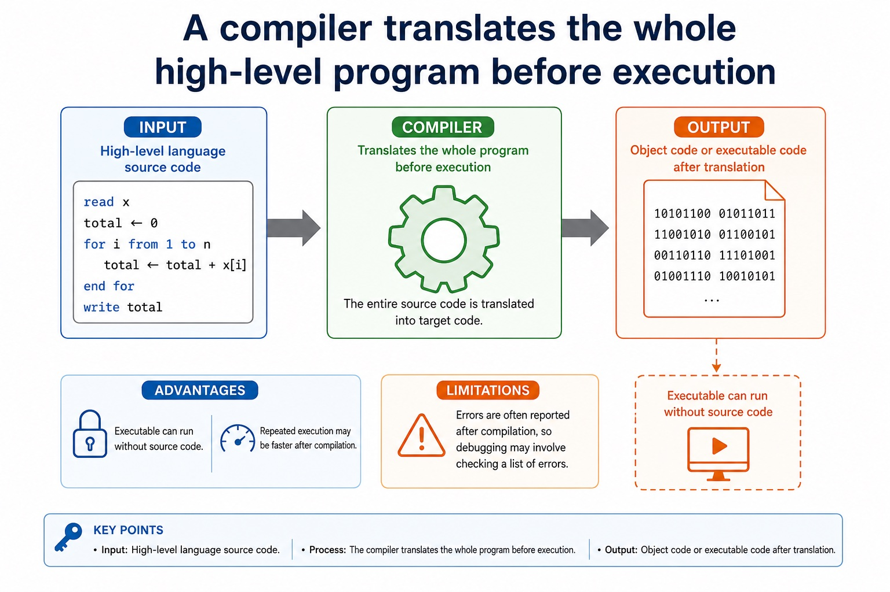

Compare compiler and interpreter advantages/disadvantages and justify use
Visual overview
A compiler translates the whole high-level program before execution

Visual transcript
- Input High-level language source code.
- Output Object code or executable code after translation.
- Advantages Executable can run without source code; repeated execution may be faster after compilation.
- Limitations Errors are often reported after compilation, so debugging may involve checking a list of errors.
Core explanation
Compiler advantages include faster repeated execution after translation, distribution without the source code and translation checks across the whole program. Disadvantages include a separate compilation step and an error list that may need several corrections before execution. Interpreter advantages include immediate statement-level feedback and convenient incremental testing. Disadvantages include repeated translation overhead, slower execution and needing the interpreter and usually the source program at run time.
A justified choice must connect the mechanism to the scenario: an interpreter can suit development and debugging; a compiler can suit repeated use or distribution; an assembler is required for assembly source. These are advantages and disadvantages of the translation approaches, not universal claims that one tool is always better.
An assembler is needed to translate a processor-specific assembly-language program into machine code or object code. A compiler is needed to translate a whole high-level language program before execution, normally producing target/object code. An interpreter translates and executes a high-level language program statement by statement during execution, normally without producing a separate permanent object-code file.
Java in console mode is partly compiled and partly interpreted: the Java compiler translates source code into platform-independent bytecode, then a Java Virtual Machine (JVM) interprets that bytecode and may just-in-time compile parts for the host processor. Bytecode is not universal processor machine code.